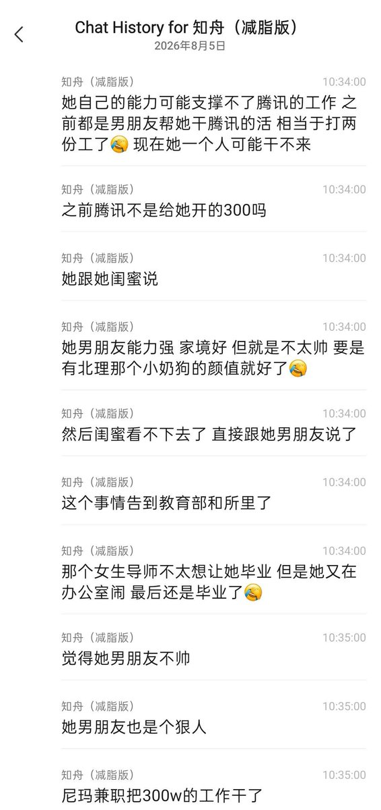

f hv
@fhv932189957574
RT @giantcutie666: 武大又出了一个杰出女校友，博士毕业入职腾讯据说年包有300W
最近被爆出来原来是学术妲己，平时干的活也都是交给力工男友
现在出轨小奶狗被发现，吞安眠药闹自杀😅
建议腾讯可以直接把她的力工男友招过来，再搭配一个颜值高的小助理，绝对像奶牛…

大漂亮| C Labs
@giantcutie666
武大又出了一个杰出女校友，博士毕业入职腾讯据说年包有300W
最近被爆出来原来是学术妲己，平时干的活也都是交给力工男友
现在出轨小奶狗被发现，吞安眠药闹自杀😅
建议腾讯可以直接把她的力工男友招过来，再搭配一个颜值高的小助理，绝对像奶牛一样的疯狂输出😁 https://t.co/5HsVrhTYPO https://t.co/TWz66LE2Dw